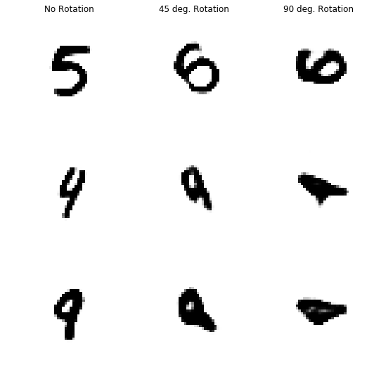
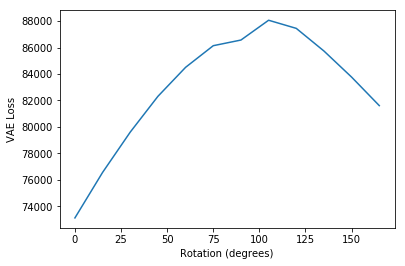
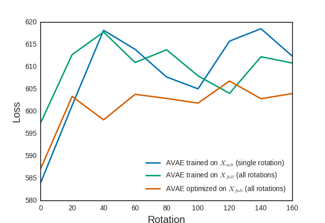
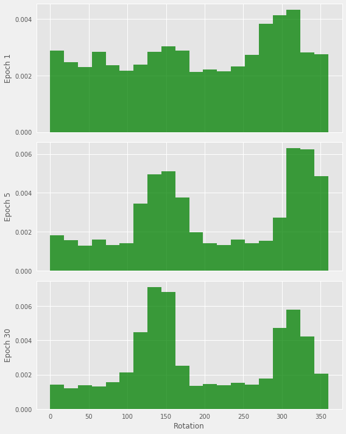

Affine Variational Autoencoders for Efficient Generalization
Limitations of Variational Autoencoders
Deep learning models are powerful, but don’t always generalize well to out of distribution samples. For example, people have no problem understanding slightly rotated digits:
 |
|---|
| Rotated MNIST |
But Variational Autoencoders (VAE) do not generalize to this change in distribution this well. Look at how the encoding performance decreases as the image is rotated:
|  |
|---|
| Images after being encoded by VAE after various rotations. Performance decreases with increased rotation. |
In a little more detail, look at the loss when MNIST digits are encoded at different rotations:
|  |
|---|
| VAE’s loss on various rotation. |
In the training dataset all numbers are oriented at $$0^{\circ}$$, and it seems this model performs worse as the digits stray further from this distribution. The loss reaches a peak and decreases, because some digits look identical when rotated $$180^{\circ}$$.
Normally to solve this problem, we use data augmentation, which is basically feeding a neural net images at all possible rotations, and brute forcing it to understand the full distribution. There are some other methods to approach this 1, but data augmentation is by far the most commonly used, and other methods have other limitations.
How to solve this?
Why is it that for a machine learning model to generalize to a rotated image, the most popular method is to feed it the same image at a bunch of different rotations? Blindly doing data augmentation increases the model complexity required, because we must learn all these representations at different orientations. We would prefer this to learn a representation with only a single rotation parameter, but it is hard for a standard CNN to learn this. Why is it that we can understand rotated images, but its so hard for neural nets to generalize in this way?
Neural nets don’t have a built in way to understand rotated images like people do, so they fail to generalize the way human vision does. But what if the model would learn some abstract representation, and then perform some “mental rotation”, something like what was discussed by Goeff Hinton in “What is wrong with convolutional neural nets ?"1
One popular approach, the Spatial Transformer Network attempts to solve this problem by applying a learned affine transform to return the image to its original orientation. As long as the network figures out the correct transform, this is a great solution! Unfortunately if the model is wrong initially, there is no way to go back and improve on the transform used:
 |
|---|
| The STN is not guaranteed to get the optimal transformation |
We would like to transform the image closer and closer to some “cannonical” orientation, based on how “weird” the image looks to us. But in classification, there is no good metric to measure how weird an image is. The best we can do is something like the classification difficulty/entropy of softmax output.
But when we have a VAE, there’s a clear metric for how “weird” an image is, the loss! This loss is shown as: \begin{equation} -L_{VAE} = E_{z\sim q_\phi}[logp_\rho(x|z)] - KL(q_\phi(z|x) || p_\rho(z))] \end{equation}
We can add an affine transform layer before and after the vae, applying a rotation to the input image, and the inverse rotation to the output. Then, for any image, we can find the rotation that will minimize this loss. It turns out that in the VAE this is actually equivalent to maximizing a lower bound on the likelihood of the data (the ELBO), so this procedure is actually moving the given image towards the training distribution, which is exactly what we’d like.
 |
|---|
| Affine Variational Autoencoder (AVAE). VAE with affine transforms added before and after the network. |
In this form the whole network is nice and differentiable. So given an image, we can optimize $$\theta$$ using SDG, the same way we optimize the parameters of the network! In practice, there’s some local minima, so some random restarts is required.
And using this, we easily generalize to rotations, and have traded off using an increased model complexity for using increased compute. In fact, this can easily be extended past rotations, and be used for more general affine transforms.
 |
|---|
| Performance of VAE compared to AVAE on rotated MNIST |
The AVAE gives a clear improvement in performance. Also, because we are only forcing the model to learn images at one orientation, the AVAE can be a smaller model compared to a VAE forced to learn the full distribution using data augmentation.
Note that this requires all images to be given to the model in some cannonical orientation at training time to achieve the full benefit of having a small model and generalizing well. This isn’t good! Most datasets aren’t made like this, and people don’t have this restriction when learning. How can we get around this and learn both a minimal representation on a subset of the data distribution during training, but also generalize to the full distribution at test time?
An option is to optimize the transform parameters $$\theta$$ during the training process, where $$\theta$$ is optimized before SGD is done for each batch of images. The intuition is that because it is optimal for the model to only learn to encode at a subset of the rotations / single rotation, as training happens the model will gradually start to learn to encode at some rotations better than others, and eventually the model will only be training on a single rotation. It turns out that this works, and this process creates a better performing model without any forced increase in model capacity:
|  |
|---|
| Comparing AVAE performance using the dataset at a single cannonical orientation, at random rotations, and at random rotations using the optimization process during training. This training optimization process achieves lowest loss. |
It worked! The loss of this model is lower for all rotations. And to make sure it worked, we can look at the distribution of rotations of the images during the training process:
|  |
|---|
| Distribution of rotations for digit “1” during training. As training progress, the model learns to encode at specific orientations. |
We see that the model started off with random rotations, but gradually learned it was better to encode them all at a similar rotation. Because this was for 1, and is almost the same when rotated $$180^{\circ}$$, there are two peaks $$180^{\circ}$$ apart.
 |
|---|
| Comparing distribution of rotations for digits “6” and “9” during training. As training progress, the model learns to encode at specific orientations. |
We can also compare 6 and 9. The model learned to encode these at $$180^{\circ}$$ at degree rotations apart, because these digits are almost the same after being rotated this amount, and so this is the most efficient way to represent them.
Discussion
We’ve got an VAE that generalizes to rotation using computation instead of increasing model size! Unfortunately it does take a lot of computation. Inference takes about 50x as long as the standard VAE. This is totally unoptimized, and it would be quite quicker to use an STN inside the optimization process, with only a few random restarts.
1 Note: This isn’t really what he is talking about here, capsules are a much more general concept. I’m just stealing the idea of transforming the image to some “useful” frame ↩ Code available at https://github.com/renebidart/avae